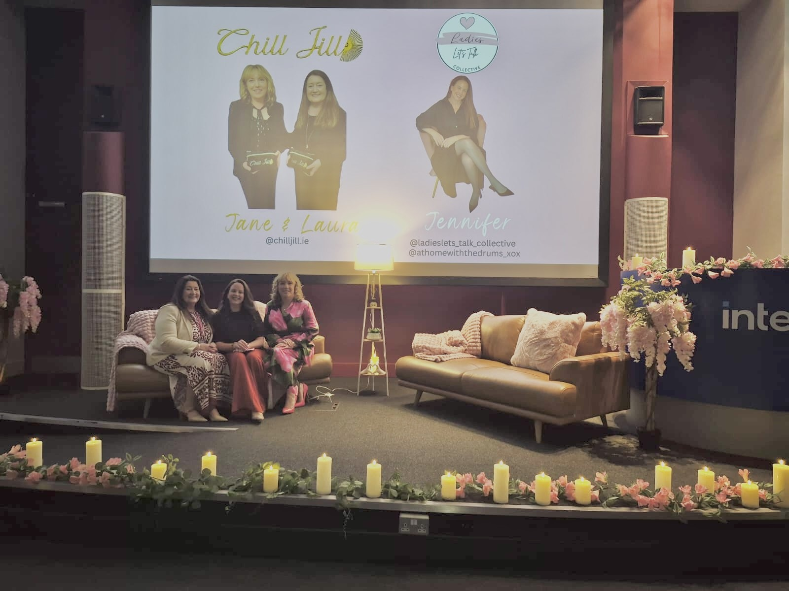

Jen brings honest, practical talks to workplaces — helping teams understand menopause, perimenopause, and women's health, and creating cultures where no one has to struggle in silence.
Menopause and women's health are still too often left out of the conversation at work — even though they affect a large part of the workforce. The result is people pushing through symptoms alone, and managers unsure how to help.
Jen's sessions change that. Drawing on lived experience and a warm, no-nonsense style, she creates a space where colleagues can ask the questions they've never felt able to ask, and where employers walk away knowing exactly how to offer support.
Every session is tailored to your organisation — whether that's a room of employees, a leadership team, or your HR and wellbeing leads.

Sessions are shaped around your team, but commonly include:
What perimenopause and menopause actually are, the range of symptoms, and why they show up differently for everyone.
How symptoms can affect focus, confidence, sleep and energy — and simple, practical ways to manage them through the working day.
What good support looks like, reasonable adjustments, and how policy and culture can make a real difference.
How to start a supportive conversation, what to say (and what to avoid), and how to lead with empathy.
Connecting menopause to the broader picture of women's wellbeing across different life stages.
A safe, judgement-free space for the questions people have always wanted to ask but never had the chance to.
Choose the format that fits your team and your time.
A relaxed 45–60 minute session, perfect for introducing the topic to a wider group over a break.
An engaging headline session for company events, awareness days, or wellbeing weeks.
A focused, interactive session equipping leaders and HR to support their teams with confidence.
These sessions are designed for any organisation that wants a healthier, more open culture.
Tell us a little about your team and what you're hoping for, and Jen will be in touch to plan a session that fits.
Get in Touch